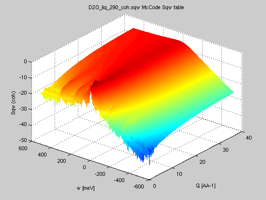
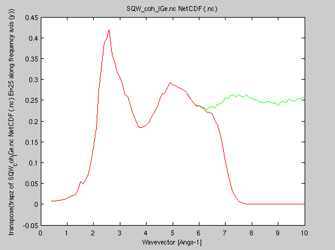
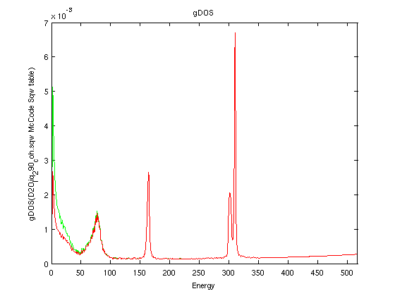
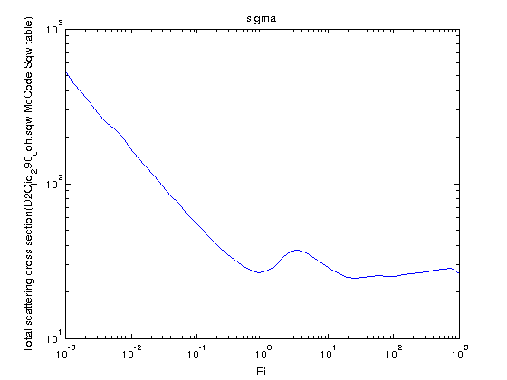
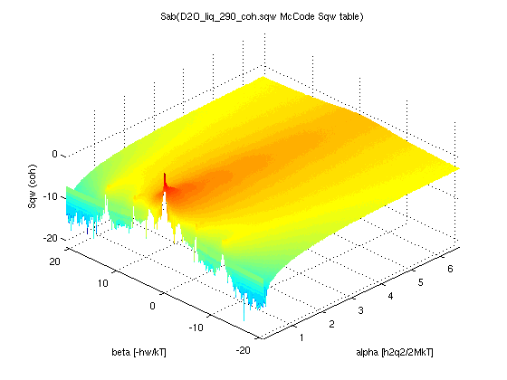
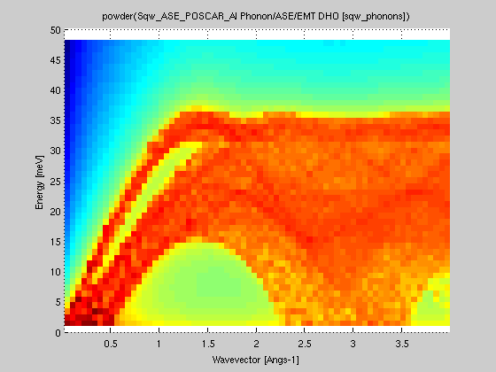
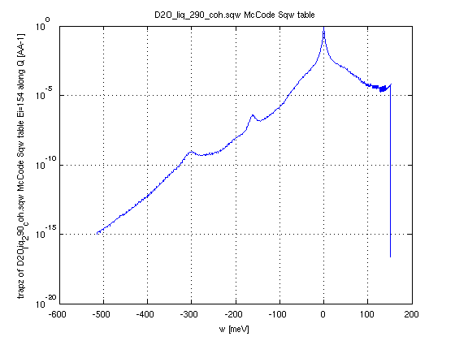

Neutron
scattering Dynamic structure factor
The iFit infrastructure comes with a set of dedicated procedures
to read and analyze S(q,w) dynamic structure factors, aka
scattering law, in the case of neutron
scattering [5,6].The dynamic structure factor is defined from the double differential scattering cross section per unit solid angle and final neutron energy as [5,6]:
where N σb kf and ki are the number of scattering units, their bound scattering cross section [14], the final and initial neutron wave-vector, respectively.
You may as well generate 4D S(q,w) models using e.g. the sqw_phonons and other specialized models. Then you can compute the 2D powder average, as shown below.
Loading/generating S(q,w) data sets
In this section, we describe how one can load existing data
sets, or generate ones.
A 2D S(|q|,w) consists in a momentum axis q
(wavevector, usually in Angs-1), an energy axis w
(usually in meV), and a dynamic structure factor 2D matrix
S(q,w).
From an
experiment, processed data
Such data sets can be measured on neutron scattering
spectrometers (time-of-flight or triple-axis). Once the raw
data has been reduced, using e.g. LAMP
at the ILL:
- apply scripts normalise, vnorm, corr_tof, t2e, and finally sqw_rebin) ;
- you get a S(q,w) data set as a workspace ;
- export it into an HDF/NeXus file or as text (write_lamp, format='hdf').
Similar data sets can be measured using X-ray spectrometers.
The file can then be read by iFit, using any of
- Sqw=load(iData, 'file')
- Sqw=iData('file')
which can read HDF, text, NetCDF, and many other formats (see
Loaders for a full description).
Common formats that can be read include McStas Isotropic Sqw,
ISIS SPE, ILL ToF experiments, ENDF (see below).
From an
experiment, raw data
Direct experimental data can be automatically converted to S(q,w) from any of (e.g. from ToF experiment):
- S(φ,channel) where φ is the radial scattering angle, and channel is the channel id (integer, step=1). This conversion requires to locate the experimental neutron wavelength (searched as 'lambda' or 'wavelength' in the data set), the sample to detector distance (searched as 'distance', as a scalar for radial geometry, or a vector for more complex geometries), and the time channel width (searched as 'ChannelWidth', scalar or vector). The time channel width can be given in [s] (preferred), [ms], or [us].
- S(φ,t) where φ is the radial scattering angle, and t is the detection time counted from the sample location. This conversion requires to locate the experimental neutron wavelength (searched as 'lambda' or 'wavelength' in the data set), the sample to detector distance (searched as 'distance', as a scalar for radial geometry, or a vector for more complex geometries). The time can be given in [s] (preferred), [ms], or [us].
- S(φ,w) where φ is the radial scattering angle and w is the energy transfer (in [meV]). This conversion requires to locate the experimental neutron wavelength (searched as 'lambda' or 'wavelength' in the data set).
- Sqw=iData('file')
- Sqw = Sqw_check(Sqw);
From Matlab variables
If you managed to get a matrix S and two vectors q,w as Matlab variables, create an S(q,w) data set with:- Sqw=iData(q,w,S)
From a Model (iFunc)
If S is an iFunc Model (analytical, such as obtained from the sqw_phonons), then simply evaluate the model into an iData object, with default Model parameters:
- Sqw=iData(S, parameters, axis1, axis2, ...)
Shaping the Sqw data set
The data set may extend on both negative and positive energy transfers, or only on one side.If it has only positive or negative energy values, then create the other side using the Sqw_symmetrize method, as detailed below.
You may as well apply the following iData operators:
- resize: change binning
in q,w, fast rebin.
- reshape: change the dimensions of the Sqw data set, the number of elements must not change.
- fill: replaces missing data (NaN's, gaps) by interpolating
- smooth: smooth the data set
- meshgrid: creates a square 2D distribution, using interpolation if necessary.
- sqw_powder:
converts a 4D S(hkl,w) data set into a 2D S(q,w) one (see
below).
- plot(log(Sqw))
Isotropic dynamic structure factors S(|q|,w) in liquids, powders, gas, polymers and other amorphous materials
The following procedures apply to 2D S(q,w), i.e. those that are obtained by averaging the S(q,w) over |q| in isotropic density materials.In the following, S*(q,w) is a symmetric (classical) dynamic structure factor, whereas S(q,w) denotes the non-symmetric (quantum) dynamic structure factor which contains the population factor (e.g. Bose for phonons). See below for more details on this.
All routines below call the Sqw_check routine, which makes sure the S(q,w) data satisfies the format definition. This routine also makes, when needed, the conversion from an experimental to the S(q,w) formating.
Conventions:
- w = Ei-Ef = energy lost by the neutron in meV.
- w > 0, neutron looses energy, material/sample gains energy, w can not be higher than the incident neutron energy (Stokes)
- w < 0, neutron gains energy, material/sample looses energy (anti-Stokes)
- q is the momentum (or wavevector) in Angs-1.
- setaxis(Sqw, 1, -Sqw{1}) or equally Sqw{1} = - Sqw{1};
1 Angs-1 = 10 nm-1
| Procedure |
Input |
Output |
Description |
| Sqw=load(iData,file) Sqw=iData(file) |
file |
iData |
Import any S(q,w) as generated by e.g.
LAMP and nMoldyn/MDANSE. |
| Sqw_symmetrize(Sqw) |
S*(|q|,w>0) |
S*(|q|,w)=S*(|q|,-w) |
 Extend the
S*(|q|,w) in both energy sides. The initial data set
should better be 'classical'. Extend the
S*(|q|,w) in both energy sides. The initial data set
should better be 'classical'. |
| Sqw_Bosify(Sqw,T) |
S*(|q|,w) | S(|q|,w) | Convert a
symmetric scattering law (aka classical, for instance
from Molecular Dynamics) into a 'quantum' scattering law
(non symmetric, for instance from neutron and X-ray
inelastic scattering experiment) |
| Sqw_check(Sqw) |
S(|q|,w) or S*(|q|,w) | S(|q|,w) or S*(|q|,w) | Check the S(q,w) data set. Possibly convert from experimental data S(φ,channel), S(φ,t) or S(φ,w). |
| Sqw_deBosify(Sqw,T) |
S(|q|,w) | S*(|q|,w) | Convert a 'quantum' scattering law (non
symmetric, for instance from neutron and X-ray inelastic
scattering experiment) into a symmetric scattering law
(aka classical, for instance from Molecular Dynamics) |
| trapz(Sqw) Sqw_Sq(Sqw) |
S(|q|,w) | S(|q|) |
Compute the
static structure factor. The S(q) is the same when
computed from the 'classical' and the 'quantum'
scattering law. |
| Sqw_dynamic_range(Sqw,Ei) |
S(|q|,w) or S*(|q|,w) | measurable S(|q|,w) for Ei |
 Restrict
the dynamic structure factor to the measurable one for
an incoming energy Ei [meV]. The detection angular range
can be set as 3rd argument. Restrict
the dynamic structure factor to the measurable one for
an incoming energy Ei [meV]. The detection angular range
can be set as 3rd argument. |
| Sqw_moments(Sqw,M) |
S(|q|,w) or S*(|q|,w) | S(q), Er, characteristic frequencies |
Compute
the energy moments, and provide some of the
characteristic frequencies (recoil, isothermal,
longitudinal/harmonic, mean energy transfer) |
| Sqw_phonon_dos(Sqw) |
S(|q|,w) or S*(|q|,w)or S(q,w) |
g(w) |
Compute the vibrational density of states (DOS) |
| Sqw_scatt_xs(Sqw,Ei) | S(|q|,w) | ∫∫S(q,w)q dq dw /2Ki2 |
Compute
the total thermal neutron scattering cross section which
is the integral of S(q,w) over the dynamic range vs.
incident neutron energy. |
| Sqw_Sab(Sqw, M) |
S*(|q|,w) | S*(alpha,beta) |
Convert a dynamic structure factor to its unit-less representation S(α,β) |
| sqw_powder(Sqw) |
S(hkl,w) 4D |
S(|q|,w) |
Convert a
4D S(hkl,w) model or data set into a powder averaged
S(|q|,w). This can be used e.g. after calling sqw_phonons. |
| sqw_kpath(Sqw) |
S(hkl,w) 4D | dispersion curves |
Compute the dispersion curves and neutron
intensity along the main crystal axes. |
| sqw_thermochemistry(Sqw) |
S(hkl,w) 4D | U,F,S,Cv |
Compute the energy, entropy, heat
capacity, and also returns the DOS. |
Example: dynamic structure factor from molecular dynamics
In the following, we demonstrate the different treatment procedures, starting from an example data set obtained from a molecular dynamics simulation.We import the data, obtained from an ab-initio Molecular Dynamics (AIMD) with VASP, for 200 Ge atoms (GGA-PW91 potential) at T=1350K, from [7]. The data set is part of iFit, as well as in McStas. You can also try liquid Rubidium from here [8] and heavy water from here [9]. This is the coherent symmetric scattering law:
- Sqw=load(iData, fullfile(ifitpath,'Data','Sqw_coh_lGe.nc'))
We plot the scattering law S*:
- plot(log10(Sqw), 'view3');
- Sqw2=Sqw_symmetrize(Sqw)
- plot(log10(Sqw2), 'view3');
From
classical to quantum scattering law (quantum correction,
detailed balance, Bose factor)
The next step is to get the temperature in. A warning is in place here. There is only one S(q,w), but there are infinite ways to derive a symmetrized S*(q,w). So, having obtained S* from Molecular Dynamics, we have to choose how to 'desymmetrize' it in order to obey the so-called 'detailed balance' accounting for the population of vibrational modes [5,6]:
This step is performed by the Sqw_Bosify procedure, which can use 3 different 'quantum corrections' to go from a classical/symmetric S*(q,w) data set to a 'real/quantum' scattering law.
The semi-classical correction, Q, aka 'quantum' correction factor, can be selected as [1,2,34]:
| Q = exp(hw/kT/2) | 'Schofield' or 'Boltzmann' [1] |
| Q = hw_kT./(1-exp(-hw/kT)) |
'harmonic' or 'Bader' [2] |
| Q = 2./(1+exp(-hw/kT)) |
'standard' or 'Frommhold' [3]. This is the default. |
where hw is the energy (in meV), and k is the Boltzmann constant.
Even though the 'Boltzmann' correction is the most natural correction, as it directly derives from the detailed balance, it is not recommended as it leads to a divergence of the S(q,w) for large energies e.g. above few 100 meV. The 'harmonic' correction is weaker but does not fully avoid the divergence at large energies. The 'standard' correction is probably the best when dealing with large neutron energies. In the 'classical' limit where hw << kT (and kT ~ 30 meV a 300K), all corrections are equivalent. All these corrections satisfy the detailed balance equally.
So, from the symmetric 'classical' S* we can now determine the 'true' S(q,w) scattering law, at a given temperature, using the 'standard' quantum correction.
- SqwT = Sqw_Bosify(Sqw2, 1250)
- plot(log10(SqwT));
When not given,
the temperature will be searched in the Sqw data set. A 3rd
argument allows to specify the quantum correction to apply ('standard'
is default). Of course, in this example, for such a high
temperature, the up- and down-scattering are about the same (the
quantum correction remains close to 1). For materials at low
temperatures, the two sides are highly disymmetric.The Sqw_deBosify procedure performs the opposite operation, that is compute a symmetric S*(q,w) from e.g. a 'quantum' experimental S(q,w). It corresponds with Sqw_Bosify(Sqw, -T).
Dynamic range accessible for a given neutron incident energy, structure factor, inelasticity correction
The dynamic range is computed by applying the momentum and energy conservation rules to the S(q,w):cos(θ) = (Ki2 + Kf2 - q2) / (2 Ki.Kf) is within [-1:1]
We can determine the dynamic range accessible to neutrons with a given incident energy, say Ei=25 meV.
- Sqw25 = Sqw_dynamic_range(SqwT, 25)
- plot(log10(Sqw25));
The structure factor S(q) is the integral of S(q,w) over the energy. We use the usual 'trapz' integrator, or Sqw_Sq which does the same.
In addition, the structure factor should converge to 1 at high momentum values:
We then recommend to plot the structure factor, and possibly adapt the S(q,w) value so that the high wavevector S(q) limit should tend to 1. This is simply accomplished by dividing the dynamic structure factor S(q,w) by the structure factor limit S(q → Inf).
It is here possible to compare the structure factor as measured with Ei=25 meV (i.e. restricted to the corresponding dynamic range) to the ideal one. The ratio is called the "inelasticity correction".
- plot(Sqw_Sq([SqwT, Sqw25]));
Characteristic frequencies
From the dynamic structure factor, one can compute the energy moments, which provide some of the characteristic frequencies [5,6,10], specifying the molar weight m of the scattering units (here 72.64 g/mol for Ge).Using the 'quantum' scattering law S(q,w), we can define n-th order frequency moment as:
- S(q) = ∫S(q,w) dq = <S> is the 0-th frequency moment
- Er(q) = h2q2/2M = <w S> is the recoil energy, 1st frequency moment
- Wc(q) = √[ 2kT*Er(q)/S(q) ] is the collective/isothermal dispersion
- Wl(q) =√[ <w3S>/Er(q) ] is the harmonic/longitudinal excitation
- Wq(q) = 2q √[ kT / m.S(q) ] is the mean energy transfer,
or half width from normalized 2nd frequency moment
- moments=Sqw_moments(SqwT, 72.64)
- plot(moments(1:5))
The density of states (aka phonon, vibrational or frequency spectrum)
The scattering law, from its definition [5,6], is a correlation function of the density operator, which itself depends on the position of the particles.The vibrational density of states is defined as the velocity auto-correlation function (VACF) of the particles. It is not a function of the positions. So, in principle, it is NOT possible to compute the vibrational density of states from the scattering law.
However, a few attempts have been made to estimate the density of states from e.g. a neutron scattering time-of-flight experiment (such as done on IN4, IN5 and IN6 at the ILL). The concept of the generalised density of states has been defined as [12,13,15,16]:
which is valid in the case of an incoherent scatterer. Then, the energy dependent density of states is the low-wavevector limit of the generalised density of states, which is a normalized quantity:
∫g(w) dw = 1
From an experimental S(q,w) data set, the g(w) is obtained from the intensity in the low angle detector bank vs. the energy transfer.
As such, it should only be considered as an approximation of the vibrational density of states, especially for most materials which have coherent scattering. The hydrogenated materials and e.g Vanadium are good examples of materials which are mostly incoherent, and the approximation is then good. For other materials, great care should be taken.
We import the heavy water NAMD simulation (3900 molecules, 290K) coherent dynamic structure factor from here [9].
- Sqw=iData('https://raw.githubusercontent.com/McStasMcXtrace/McCode/master/mcstas-comps/data/D2O_liq_290_coh.sqw');
- SqwT = Sqw_Bosify(Sqw_symmetrize(Sqw), 290);
- plot(log(SqwT))
- g=[ Sqw_phonon_dos(Sqw) Sqw_phonon_dos(SqwT) ];
- plot(g); xlim([0 Inf]);
The powder average
When a 4D S(q,w) model is created, using e.g. the sqw_phonons and other specialized models, one can compute the 2D powder average, which is the projection of the 4D data set onto the (|q|,w). space.However, this projection must take care of the crystal structure. When the reciprocal lattice information is found in the object (matrix B=[a* b* c*]), the conversion from 'rlu' (e.g. 2pi/a units) to 'Angs-1' (cartesian) is automatically done (and this information is stored in the Model upon creation):
The the average is obtained using e.g.
>> s=sqw_phonons([ ifitpath 'Data/POSCAR_Al'],'metal','EMT');Here we have generated a 4D data set from the sqw_phonons iFunc Model, and then reduced it to 2D.
>> pow=sqw_powder(s); plot(log(pow));
The same procedure can be applied on an evaluated iData object out of the model.
Example:
dynamic structure factor from a neutron scattering experiment
The symmetrization step is not needed if you import experimental
S(q,w) as measured on inelastic neutron scattering spectrometers
such as IN5@ILL.
This type of data set already 'contains' the Bose factor
accounting for the population of modes.Then the sequence of operations is first to load the data set, then apply the Sqw_deBosify procedure, specifying the temperature if it is not defined in the data set. Then Sqw_symmetrize can be applied to derive a symmetric data set which extends in both w>0and w<0. The data close to the elastic w=0 line, which can be measured in up- and down- scattering, is computed as the mean of both sides.
Then, the rest of the data treatment is the same as above.
References
- P. Schofield. Phys. Rev. Lett., 4, 239 (1960).
- J. S. Bader and B. J. Berne. J. Chem. Phys., 100,
8359 (1994) ; see also T. D. Hone and G. A. Voth. J.
Chem. Phys., 121, 6412 (2004).
- L. Frommhold. Collision-induced absorption in gases, 1 st ed., Cambridge Monographs on Atomic, Molecular, and Chemical Physics, Vol. 2, Cambridge Univ. Press: London (1993).
- B. Hehr, http://www.lib.ncsu.edu/resolver/1840.16/7422 PhD manuscript (2010).
- Helmut Schober, Journal of Neutron Research 17 (2014) pp. 109-357<http://dx.doi.org/10.3233/JNR-140016>
- G.L. Squires, Introduction to the Theory of Thermal Neutron Scattering, Dover Publications Inc.(1997)
- Hugouvieux V, Farhi E, Johnson MR, et al., PRB 75 (2007) 104208
- E. Farhi, V. Hugouvieux, M.R. Johnson, W. Kob, Journal
of Computational Physics 228 (2009) 5251
- E. Farhi et al, J. Nucl. Sci. Tech. 52 (2015) 844; DOI: 10.1080/00223131.2014.984002
- J-P.Hansen and I.R.McDonald, Theory of simple liquids Academic Press New York 2006.
- NIST Neutron scattering lengths and cross sections <https://www.ncnr.nist.gov/resources/n-lengths/>;
See also Sears, Neut. News 3 (1992) 26.
- Price J. et al, Non Cryst Sol 92 (1987) 153
- Bellisent-Funel et al, J. Mol. Struct. 250 (1991) 213
- Sears, Neutron News 3 (1992) 26
- Suck et al, Journal of Alloys and Compounds 342 (2002) 314
- Bredov et al., Sov. Phys. Solid State 9, 214 (1967)
Neutron scattering cross sections for nuclear engineering
Reading ENDF data sets
iFit can read ENDF
Thermal Scattering data sections (MF=7 MT=2 and 4), as well as
ACE files (requires PyNE 0.5).
>> endf = iData('http://t2.lanl.gov/nis/data/data/ENDFB-VII-thermal/HinH2O')
endf = array [10 1] iData (methods,doc,plot,plot(log),more...) object:
Index [Tag] [Dimension] [Title] [Last command] [Label/DisplayName]
1 iD72088 [1 1] 'HinH2O.txt ENDF "Data Signal"' iD72088=load(iData,'... HinH2O.txt
2 iD72089 [274 187] 'H(H2O) T=293.6 [K] Thermal ... "S(alp..."' iD72089=load(iData,'... H(H2O) T=293.6 ...
3 iD72090 [274 187] 'H(H2O) T=350 [K] Thermal ne... "S(alp..."' iD72090=load(iData,'... H(H2O) T=350 [K...
4 iD72091 [274 187] 'H(H2O) T=400 [K] Thermal ne... "S(alp..."' iD72091=load(iData,'... H(H2O) T=400 [K...
5 iD72092 [274 187] 'H(H2O) T=450 [K] Thermal ne... "S(alp..."' iD72092=load(iData,'... H(H2O) T=450 [K...
6 iD72093 [274 187] 'H(H2O) T=500 [K] Thermal ne... "S(alp..."' iD72093=load(iData,'... H(H2O) T=500 [K...
7 iD72094 [274 187] 'H(H2O) T=550 [K] Thermal ne... "S(alp..."' iD72094=load(iData,'... H(H2O) T=550 [K...
8 iD72095 [274 187] 'H(H2O) T=600 [K] Thermal ne... "S(alp..."' iD72095=load(iData,'... H(H2O) T=600 [K...
9 iD72096 [274 187] 'H(H2O) T=650 [K] Thermal ne... "S(alp..."' iD72096=load(iData,'... H(H2O) T=650 [K...
10 iD72097 [274 187] 'H(H2O) T=800 [K] Thermal ne... "S(alp..."' iD72097=load(iData,'... H(H2O) T=800 [K...
>> subplot(log(endf(2:end)),'view2 tight')
The resulting data sets are S(alpha,beta) for each temperature.
The general information section (MF1/MT451) is stored in all
S(alpha,beta) data sets.We recommend to make use of PyNE in order to read ENDF and ACE files.
PyNE can be installed under Ubuntu with commands:
% sudo apt-add-repository 'deb http://packages.mccode.org/debian stable main'
% sudo apt-get update
% sudo apt-get install pyne
Total
scattering cross section, energy dependent
The energy dependent scattering cross section is computed in
the cold-thermal range as the integral on the dynamic range
vs. the incident energy:
σ(Ei) = σb∫∫S(q,w)q dq dw /2ki2
where σb is the tabulated bound neutron cross section [Sears, Neutron News 3 (1992) 26] for thermal energies. The integral can be computed with the Sqw_scatt_xs procedure, for a given energy range, which should then be multiplied by the bound thermal scattering cross section σb.
In the following example, we compute the coherent scattering cross section, with the bound cross section such as 15.4 barns for the coherent scattering in D2O [10] (data here):
- Sqw=iData('https://raw.githubusercontent.com/McStasMcXtrace/McCode/master/mcstas-comps/data/D2O_liq_290_coh.sqw');
- SqwT = Sqw_Bosify(Sqw_symmetrize(Sqw), 290);
- Ei = logspace(-3,3,50);%
from Ei=10-3 to 102 meV.
- XS = 15.4*Sqw_scatt_xs(SqwT,Ei);
- plot(XS); set(gca, 'YScale','log','XScale','log');
The above equation asymptotically converges to σb. Indeed, S(q) = ∫S(q,w) dq → 1 for large q values, and the dynamic range for large energies Ei becomes rectangular (the neutron velocity is large so that the dynamic range slope at q=0 and q=2ki is nearly vertical) and extends from q=0 to q=2ki. Then the total scattering cross section simplifies as:
→ σb∫ q2/2 dw /2ki2 up to q=2ki
→ σb
As most S(q,w) scattering law models in nuclear engineering include an e-WEi decaying factor (a kind of very weak/slow Debye-Waller damping, see NJOY/LEAPR), we may compute the constant W so that the total cross section converges to the free cross section at e.g. Ei=1eV (used in e.g. OpenMC), then we find
This correction is applied below the 1eV threshold, and is kept constant above it.
Warning: this factor is NOT the Debye-Waller factor exp(-<u2>Q2) !
The scatterer mass can be input as 3rd argument to Sqw_scatt_xs. For a poly-atomic material, the effective mass is obtained by weighting the bound cross sections with the A2/(A+1)2 factors, e.g.:
M = r/(1-r)
For instance, in the case of light water we have two H atoms (A=1 σb=80.2) and one O atom (A=16 σb=4.2), we compute
M = r/(1-r) = 1.06 i.e. scattering is mostly the hydrogen one.
M = r/(1-r) =2.79 i.e. scattering is mostly from deuterium, but with an oxygen contribution.
Dynamic structure factor S(alpha, beta) for e.g. ENDF MF7 and ACE files
A dynamic structure factor as seen above can be expressed in the (q,w) space, and then the dynamical features are not highly sensitive to the temperature, except close to phase transitions. However, for historical reasons, most neutron transport codes such as MCNP, use so-called symmetric S*(α,β) which are stored in section MF=7 of e.g. ENDF and related neutron data bases. These data sets are highly sensitive to the temperature, as the axes alpha and beta are.The S*(α,β) is a representation of the dynamic structure factor using unit-less momentum and energy variables defined as:
α= h2q2/2MkT = [Ei+Ef-2 μ √(Ei*Ef)]/A.kT
β = -hw/kT = (Ef-Ei)/kT
A = M/m
μ = cos(θ) = (Ki2 + Kf2 - q2) / (2Ki.Kf)
The variable change (q,w) → (alpha,beta) is done with the Sqw_Sab procedure, which takes as input the mass of the scatterer A and the Temperature. When not given, these quantities are searched in the original data set. The input data S*(q,w) set must be 'classical' that is either obtained from a molecular dynamics (may have to symmetrize it), or from an experiment after deBosify and symmetrization:
- Sqw=iData('https://raw.githubusercontent.com/McStasMcXtrace/McCode/master/mcstas-comps/data/D2O_liq_290_coh.sqw');
- Sab = Sqw_Sab(Sqw_symmetrize(Sqw), 20);
- plot(log(Sab))
References:
- M. Mattes and J. Keinert, IAEA INDC(NDS)-0470, 2005. [link]
- R. E. MacFarlane, LA-12639-MS (ENDF-356), 1994. [link]
Double
differential cross section at a given angle and incident
neutron energy
It is usual, in the neutron cross section data bases, to compare
an evaluated double differential cross section (measured
intensity) at a given angle, with an actual measurement.This procedure is trivial once the S(q,w) has been obtained, by applying the Sqw_dynamic_range procedure for the selected angle. A scaling factor may be needed, depending on how the S(q,w) data set is normalised.
In the following example, we use Molecular Dynamics data, symmetrize it, then apply the detailed balance to go from the 'classical' to the 'quantum' S(q,w). Finally, we extract the S(q,w) for a given incident energy Ei=154 meV and around 10 deg detector angle. And we plot the integral along momentum (axis 1) to show a spectrum.
- Sqw=iData('https://raw.githubusercontent.com/McStasMcXtrace/McCode/master/mcstas-comps/data/D2O_liq_290_coh.sqw');
- SqwT = Sqw_Bosify(Sqw_symmetrize(Sqw), 290);
- DDCS = Sqw_dynamic_range(SqwT, 154, [5 15])
- plot(trapz(DDCS,2));
References for water data:
- O. K. Harling, Slow Neutron Inelastic Scattering and the
Dynamics of Heavy Water,
Nucl. Sci. Eng., 33, 41 (1968). Provides heavy water data at Beta=1.5, Ei=38.6, meV T=299 K, and Ei=101 meV theta=60 deg. [link]
- F.G. Bischoff, M.L. Yeater, W.E. Moore, Nucl. Sci.
Eng. 48 (1972) 266. Provides heavy water ToF
data Ei=233 meV at θ=25 deg. [link]
- F.G. Bischoff et al., Low Energy Neutron Inelastic Scattering, RPI-328-87 (1967). Provides light water data Ei=154, 231, 631 meV at θ=60 deg.
- R. E. MacFarlane, LA-12639-MS (ENDF-356), 1994. [link]. Indicates light water rotational vibrations at 205 and 408 meV
- E. Liu (RPI) <http://homepages.rpi.edu/~danony/Papers/RND2011/ND_Sym_Liu_4_27_11.pdf> presents light water data at Ei=600 and Ei=154 meV, and compares to older data from Bischoff and Esch.
- J. I. Mrquez Damian et al, Annals of Nuclear Energy
65 (2014) 280289. [link]
Gathers most of this data.
- Esch et al, Nuclear Science and Engineering: 46,
223-235, 1971. Provides light water data Ei=632 meV and 154
meV theta=10 14 25 40 60 150 deg. [link]

{kind=link}
{kind=link}
{kind=link}
{kind=link}
{kind=link}
{kind=link}
{kind=link}
{kind=link}
{kind=link}